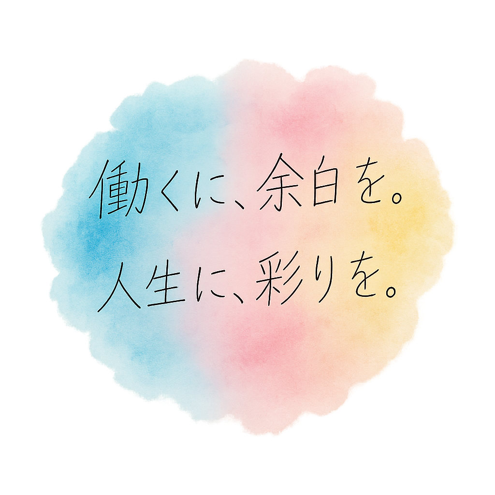

お客様の声
実際にご利用いただいたお客様からの声をご紹介します
業務効率化の鬼
しくみの力でお客様の業務を変革

売上集計業務を自動化
月次作業時間を80%削減
株式会社田中製作所
導入の効果
複数システムのデータを自動統合
月次レポート作成を完全自動化
経営判断に必要な時間を確保

在庫管理を完全自動化
発注ミスをゼロに削減
山田商店
導入の効果
在庫切れ・過剰在庫を防止
スタッフの接客時間を増加
お客様満足度の向上を実現

請求書処理を自動化
月末残業時間をゼロに
佐々木建設株式会社
導入の効果
請求書作成・送付を完全自動化
計算ミス・記載漏れをゼロに
働き方改革と信頼性向上を実現
声キャン！
学生のリアルな声を聞いてみませんか？
モニター企業募集中！
採用発信の効果を高めたい企業様を募集しています。 学生の声を活かして、御社の採用メッセージを「届く」形に変えませんか？
無料モニター実施中
こんな企業様におすすめ
・SNSの反応が薄い
・学生に響くメッセージが分からない
・採用活動の効果を高めたい
まずはお気軽にご相談ください
期待できる効果
・学生の本音が分かる
・採用メッセージが改善される
・エンゲージメント率向上
データに基づいた改善提案